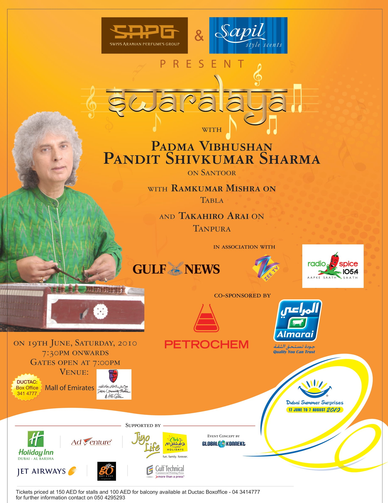
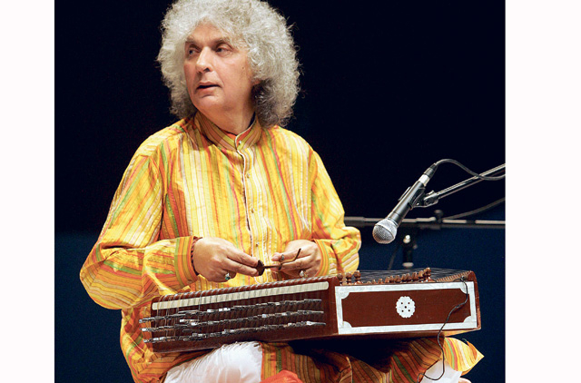

Swaralaya

Read the article about this event on Gulf News or here, at Global Konnekt
Pandit Shivkumar Sharma is credited with making santoor a popular instrument

November 26, 2010 00:01
Indian classical music has always enjoyed a pristine and exalted position in world music for its artistic elements, spiritual upliftment, range of instruments and styles of musical offerings, ability to preserve and propagate. Indian classical music has always enjoyed a pristine and exalted position in world music for its artistic elements, spiritual upliftment, range of instruments and styles of musical offerings, ability to preserve and propagate. ...
Santoor is an instrument that originated in Persia and moved on to many countries including India and was for many years associated with folk music.
In the early decades of the 20th century, the santoor, or shata-tantri veena as it was called in earlier times, was used as an accompaniment to a specific type of singing called Sufiana.
When Pandit Uma Dutt Sharma, a renowned vocalist from Jammu and a disciple of Pundit Bade Ramdasji of Benares gharana, discovered the instrument, he became interested in its possibilities.
After extensive research on the instrument, he passed on to his only son Shivkumar the responsibility of establishing it on the concert platform.
Shivkumar Sharma is the master instrumentalist of the santoor. He is credited with single-handedly making the santoor a popular classical instrument, to the extent that the santoor and Pandit Shivkumar Sharma are synonymous.
Sharma modified the Kashmiri folk instrument to make it more suitable for his classical technique, increasing the range of the instrument to three full octaves. Besides, he also created a new technique of playing with which he could sustain notes and maintain sound continuity.
In an exclusive interview with Weekend Review, Pandit Shivkumar Sharma shares his opinions on the future of classical music, his foray into Indian film music and the transformation of traditional classical genre to a more contemporary wide range of universally accepted and appreciated music, with different elements of fusion interspersed.
How has the Indian classical music sustained in the wake of so many different types of popular music flooding homes through television, radio, internet and other media?
It is a very valid question. Strangely enough today's television, radio and other media have almost ignored classical music for reasons best known to them. But ground realities are totally different. Indian classical music is happening all over the country. Big music festivals and monthly concerts are happening, most significantly in schools, colleges and other institutions.
Considering that you have been the pioneer of the santoor and have brought it to a cult status in the realm of classical music, how do you see the future of the instrument? How many serious students and performing artistes are there in the santoor?
The future of any art form depends on two factors — first we need extraordinary and dedicated musicians and secondly a large number of listeners and their patronage. With reference to the santoor, both are happening.
I have been teaching my disciples for the past 40 years and they are performing and teaching around the world but I would like to say extraordinary musicians are not created, they are born.
As a result we cannot have dozens of extraordinary musicians of any art form. It had been the case always, one or two musicians carry on the tradition and give the traditional art form a new angle. I have got many disciples but Rahul Sharma has done some path-breaking work in different genres of music on the santoor, at the same time maintaining the traditional purity of it.
Has the level of appreciation and understanding of classical music changed over the years? Is there any pressure on the artiste to bend to the whims and demands of the organisers and audiences?
There is a change. Fifty years ago, there was a lesser number of listeners of classical music and a majority of them were in their 40s or above. Today there is a much, much bigger audience, although not as knowledgeable as in the past. But there is a large number of young listeners being added. Introduction of corporate programmes definitely has added some new pressures on the artistes.
Sometimes their demands may not be in conformity with the aesthetics of our music but it is up to the individual musician to interact with such people and convert them to good listeners.
You have scored such wonderful music for some memorable Hindi films. When can we see you return to film music? What do you feel about the present breed of composers?
Thanks for your appreciation of our film music. Right from the beginning we were very clear that we would not sacrifice classical music for the sake of music direction in the films.
The same stands true even today but if time permits and there is a scope for our kind of music in a film, we could still be open to the idea. Film music has always been creative, keeping in mind the subject of the movie, the taste in music and poetry of the director of the film. The same is being reflected in today's films.
How was your journey from Kashmir to Mumbai along with the santoor? Any memorable experiences in your career graph?
There had been umpteen experiences in bringing the santoor to its present form and many, many difficult situations to be faced.
I would like to mention one incident which could be called a turning point in my life. In 1960, I was offered a job as music producer in Radio Jammu which my father wanted me to take up as a financial security but I could never imagine myself doing a 9-to-5 job even though it was connected with music.
I had a tiff with my father and guru and wanted to experiment my talent as a freelance musician and left home totally unplanned and landed in Mumbai with my santoor and Rs500 (Dh40) in my pocket on June 1, 1960. Had I not taken that blind jump in the darkness of the future, I don't know what would have happened to the santoor and my life.
You performed in Dubai at the Swaralaya concert in June. Do you find any perceptible difference in knowledge and appreciation between Indian and foreign audiences?
I came to Dubai after a few years for the Swaralaya concert. The concert was very professionally organised. I liked the ambience on the stage and particularly the audience that evening who were real lovers of our music.
As far as the listeners in India or other countries are concerned, now I don't find any difference whether I am playing in Mumbai or Melbourne, or in Delhi or Dubai — the reaction is the same because the world has been exposed to Indian classical music for more than half a century.
Jyoti Easwaran is a writer based in Dubai.